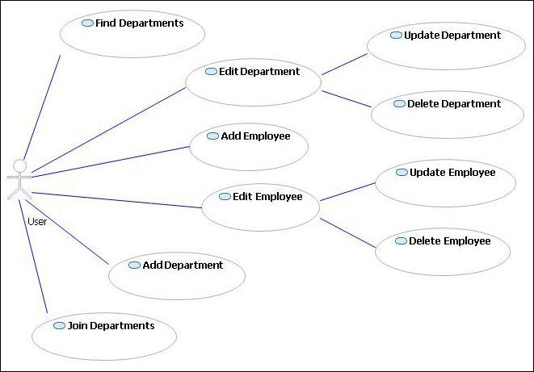
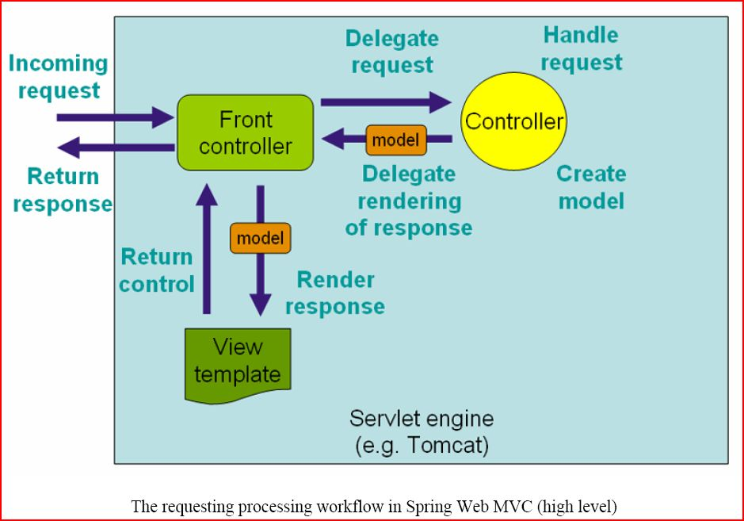
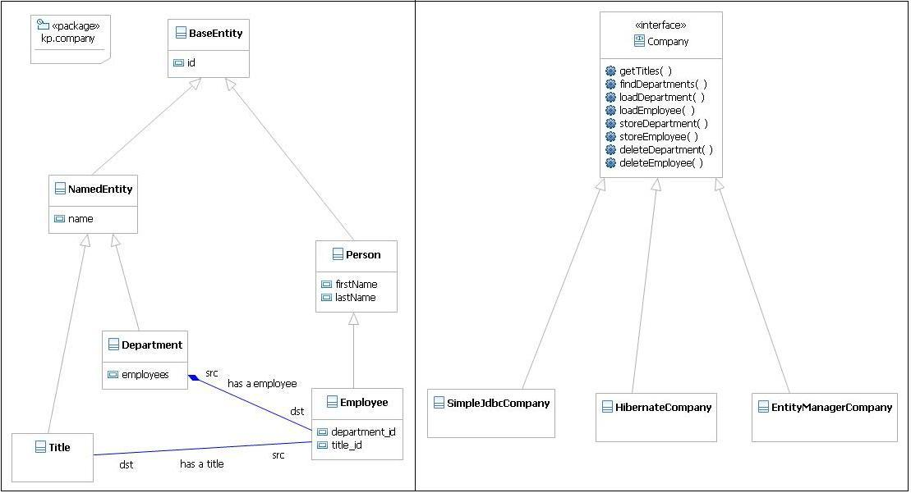
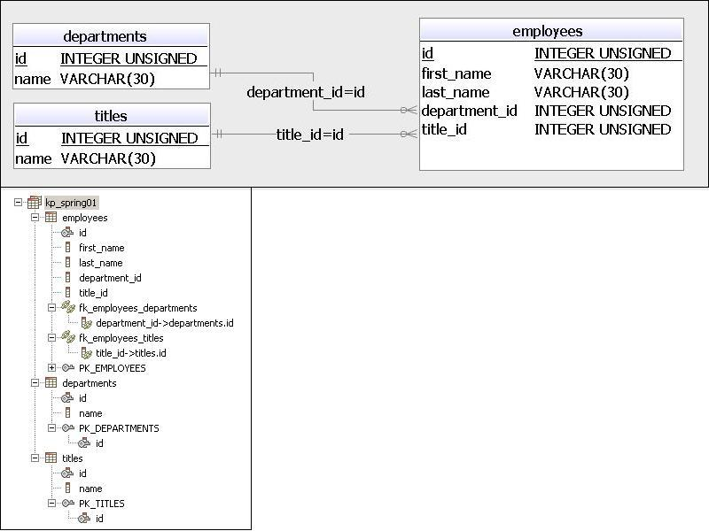
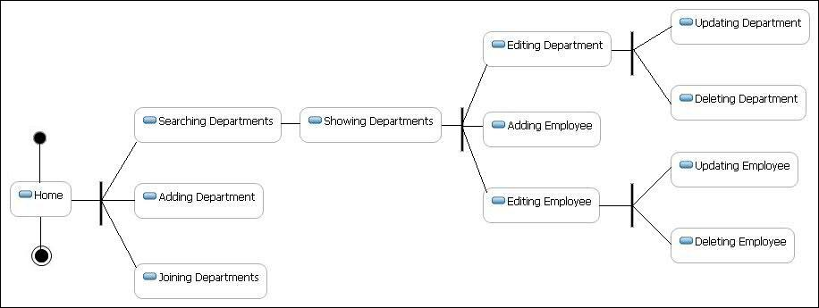
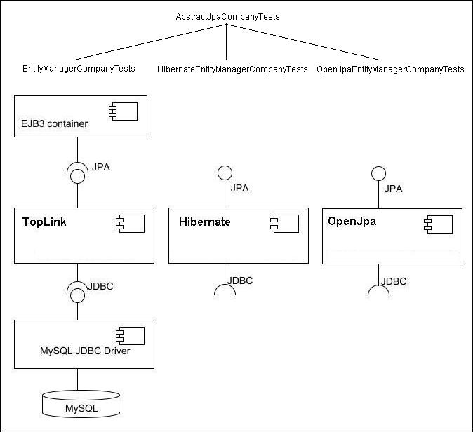

KP_Spring01 README
Use Cases
Find departments: view a list of the company's departments and its employees
Edit department: view the information about a department
Update department: update the information about a department
Add department: add a new department to the company
Delete department: delete existing department (with its employees) from the company
Edit employee: view the information about an employee
Update employee: update the information about an employee
Add employee: add a new employee to the department
Delete employee: delete the employee from the department
Join departments: join two departments moving employees from the second department to the first department
Use Case Diagram

Four-tier Layered Architecture
Presentation Layer
Business Logic Layer
Persistence Layer
Database Layer

 Java API Documentation
Java API Documentation
Application Design & Implementation
Server Technology
The application should be usable with any Java EE web application container that is compatible with the Servlet 2.4 and JSP 2.0 specifications.
It was tested with Apache Tomcat 7.
The view technologies that are to be used for rendering the application are Java Server Pages (JSP) along with the Java Standard Tag Library (JSTL).
Database Technology
The application uses a relational database for data storage. It was tested with the database MySQL 5.1.
Logging
The application uses Apache Log4J loggers.
Business Layer
The Business Layer consists of several basic JavaBean classes representing the application domain objects (classes in package kp.company)
and associated validation objects that are used by the Presentation Layer (classes in package kp.company.validation).
The validation objects used are all implementations of the org.springframework.validation.Validator interface.
Business / Persistence Layer
There is no separation of the primary Business and Persistence Layer API.
The Persistence Layer is configured to use MySQL database with any one of the following
data access technologies aided by infrastructure provided by Spring:
JDBC
Hibernate 3
Java Persistence API
The high-level business/persistence API is the kp.company.Company interface.
Each persistence strategy in KP_Spring01 is a different implementation of the Company interface:
The JDBC implementation is kp.company.jdbc.SimpleJdbcCompany
The Hibernate 3 implementation is kp.company.hibernate.HibernateCompany.
The Hibernate configuration is provided by the file kp_spring01.hbm.xml.
The JPA implementation is kp.company.jpa.EntityManagerCompany
The JPA configuration is provided by orm.xml and persistence.xml.
All Company methods are run in a transactional context.
ApplicationContext
A Spring org.springframework.context.ApplicationContext object provides a map of user-defined JavaBeans that
specify either a singleton object or the initial construction of prototype instances.
These beans constitute the Business/Persistence Layer of KP_Spring01.
The following beans are defined in all 3 versions (1 per access strategy) of the KP_Spring01 war/WEB-INF/applicationContext-*.xml file:
PropertyPlaceholderConfigurer (for JDBC-related settings from jdbc.properties file).
dataSource
transactionManager
company (defines the implementation of the Company interface)
Presentation Layer
The web application is configured via the following files:
WEB-INF/web.xml
WEB-INF/kp_spring01-servlet.xml (configures the dispatcher servlet and the other controllers and forms that it uses)
WEB-INF/classes/messages*.properties
The beans defined in kp_spring01-servlet.xml file reference the Business/Persistence Layer beans defined in applicationContext-*.xml.
Controllers
annotation-driven, POJO MultiActionController controllers
annotation-driven, POJO Form controllers
FindDepartmentsForm
AddDepartmentForm
EditDepartmentForm
AddEmployeeForm
EditEmployeeForm
Model Attributes
departments
department
employee
titles
Logical Views
welcome.jsp is the "home" screen
departments/search.jsp is used to find departments by name
departments/list.jsp is used to display a list of found departments
departments/show.jsp is used to display department details
departments/form.jsp is used to create, update or delete department
employees/form.jsp is used to create, update or delete employee
Mapped URL paths:
path [/] mapped onto handler CompanyController
path [/departments/join] mapped onto handler CompanyController
path [/departments/new] mapped onto handler AddDepartmentForm
path [/departments] mapped onto handler FindDepartmentsForm
path [/departments/search] mapped onto handler FindDepartmentsForm
path [/departments/{departmentId}] mapped onto handler CompanyController
path [/departments/{departmentId}/edit] mapped onto handler EditDepartmentForm
path [/departments/{departmentId}/employees/new] mapped onto handler AddEmployeeForm
path [/departments/*/employees/{employeeId}/edit] mapped onto handler EditEmployeeForm
Model-View-Controller Diagram

Class Diagram

Database Model Diagram

State Machine Diagram

Testing
Canoo Webtest
Webtest Results
JUnit 4 based Test Cases
DepartmentTests (these tests do not use database connection)
AbstractCompanyTests for testing:
Simple JDBC implementation of the Company interface: SimpleJdbcCompanyTests
Hibernate implementation of the Company interface: HibernateCompanyTests
AbstractJpaCompanyTests for testing
JPA implementation of the Company interface:
with TopLink implementation of the EntityManager: EntityManagerCompanyTests
with Hibernate implementation of the EntityManager: HibernateEntityManagerCompanyTests
with OpenJpa implementation of the EntityManager: OpenJpaEntityManagerCompanyTests
Tests from items 1 and 2 above use Spring TestContext Framework.
Tests from item 3 use a deprecated package with the legacy JUnit 3.8 classes.

Back to the top of the page